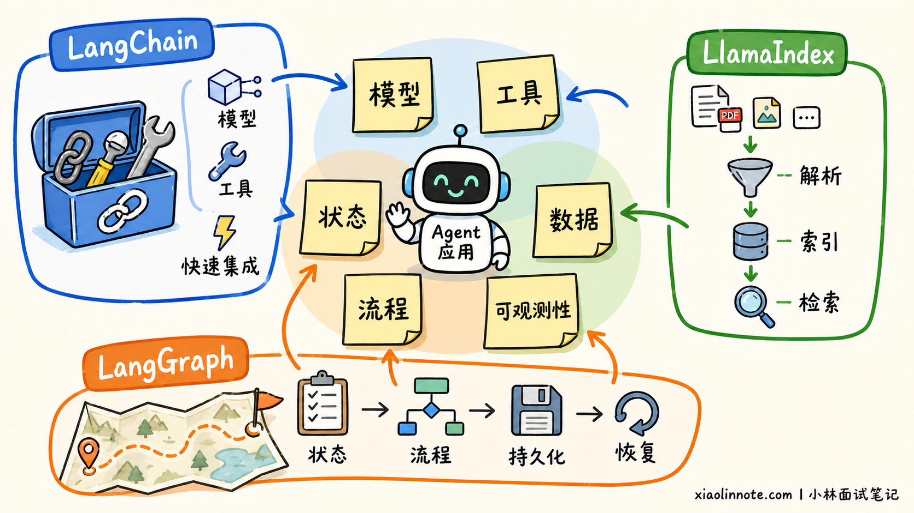
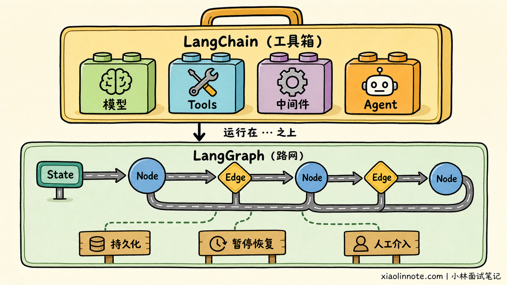
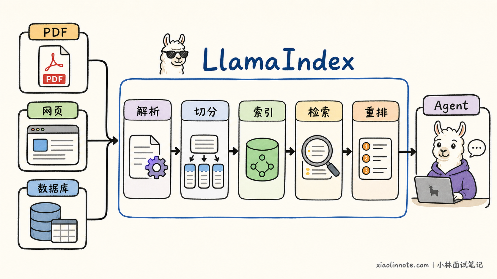
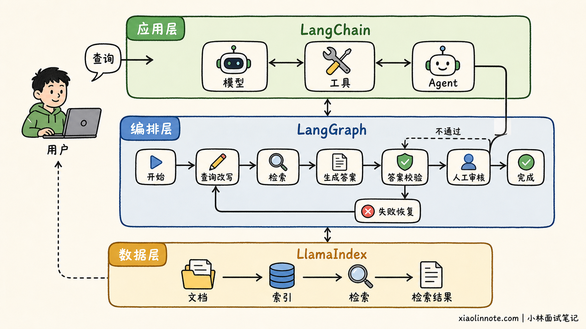
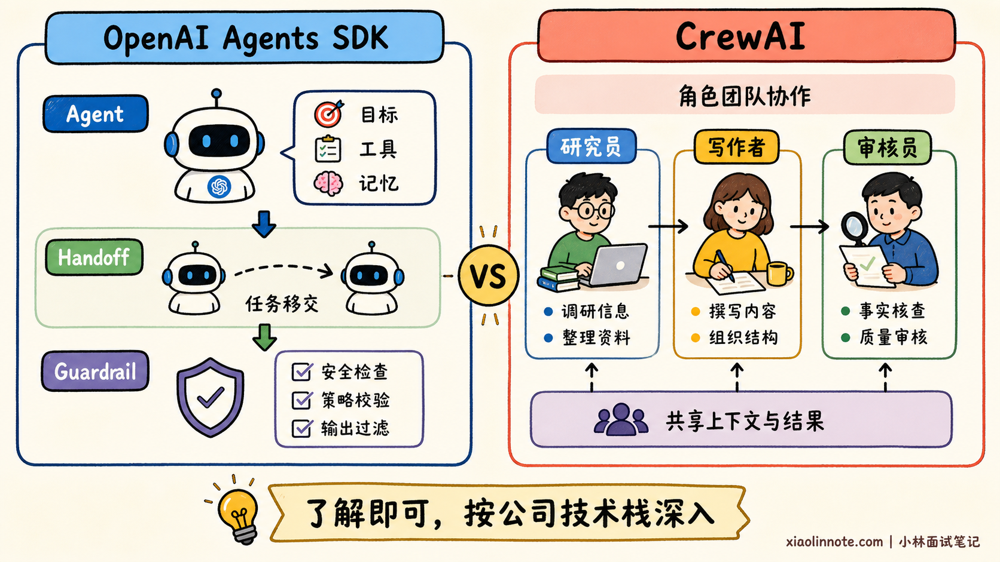

本篇目录
1. 你了解过哪些 AI Agent 开发框架？
👔面试官：你了解过哪些 AI Agent 开发框架？
🙋♂️我：了解过 LangChain、LangGraph、LlamaIndex、CrewAI、AutoGen……反正都是封装大模型和工具调用的，用哪个都差不多。
👔面试官：只会报名字不算了解。它们解决的问题、抽象层次和适用场景都不同，怎么会差不多？
🙋♂️我：那 LangChain 生态最大，所有项目都使用 LangChain，复杂流程多写几个 Chain 就行。
👔面试官：复杂的有状态流程还只想到 Chain？LangGraph 为什么会出现？LlamaIndex 又为什么长期强调数据和上下文增强？
🙋♂️我：那我多背几个框架名称和 GitHub Star，面试时全部说一遍，应该就显得了解得比较全面。
👔面试官：框架名称说得多，不等于理解得深。你应该围绕项目难点说明为什么选，而不是拿热度和名词数量代替技术判断。
面试官要听的是你的选型依据：主流框架分别解决什么问题，放到具体业务里又该怎么选。
💡 简要回答
我重点了解过 LangChain、LangGraph 和 LlamaIndex。
LangChain 提供模型、Prompt、工具、Agent 和中间件等通用抽象，集成范围比较广，适合快速构建工具调用、RAG、SQL 查询等 AI 应用。
LangGraph 更偏底层的状态与流程编排。面对循环、分支、并行、断点恢复和人工审批等复杂流程时，可以使用图结构显式控制 Agent 的执行路径。现在 LangChain 的 Agent 也运行在 LangGraph 之上，因此二者更多是上下层关系，而不是互相替代的竞争关系。
LlamaIndex 的优势集中在数据接入、文档解析、索引和检索，适合企业知识库、文档问答和复杂 RAG 等数据密集型应用。
除此之外，我也了解 OpenAI Agents SDK 和 CrewAI。前者适合以 OpenAI 模型为主的轻量 Agent，后者擅长使用角色和任务表达多 Agent 协作。不过在通用 Python Agent 开发岗位中，我会优先掌握 LangChain、LangGraph 和 LlamaIndex，再根据公司的技术栈补充其他框架。
📝 详细解析
Agent 框架解决了什么？
假设不用任何框架，自己实现一个能查询资料、调用接口并记住上下文的 Agent，需要做多少事情？
你需要接入模型、定义工具协议、实现 Agent 循环，并把工具结果重新交给模型。此外，还要处理状态、重试、超时、流式输出、人工确认和运行追踪。完成一次演示并不难，真正困难的是系统执行十几步后能否恢复，以及出错时能否快速定位问题。
Agent 框架会把这些重复工程抽象成可复用组件。不同框架各有侧重：LangChain 偏通用组件和快速集成，LangGraph 偏状态与流程控制，LlamaIndex 偏数据与检索。

比较框架时，重点要落到业务约束：项目卡在哪里，哪套抽象更适合解决这个问题。
为什么重点看 LangChain？
LangChain 的定位已经不只是早期的「把多个 Prompt 串成 Chain」。它提供模型、消息、Prompt、工具、结构化输出、中间件和 Agent 等通用抽象，并集成了大量模型供应商、向量数据库和外部工具。
它最大的价值是集成范围广、开发速度快。例如，我们需要切换不同模型，接入搜索、数据库或 MCP 工具，快速实现 RAG Agent、SQL Agent 或客服助手时，LangChain 可以减少大量协议适配和样板代码。
不过，LangChain 的高层抽象更适合常见 Agent 模式。当业务出现复杂循环、精细分支、长时间暂停和断点恢复时，就需要进一步使用 LangGraph 控制执行流程。
LangGraph 和 LangChain 是什么关系？
LangGraph 使用 State + Node + Edge 表达 Agent 工作流：State 保存共享状态，Node 负责执行模型或工具，Edge 决定下一步运行哪个节点。
它重点解决的是循环、条件分支、并行执行、持久化、暂停恢复和人工介入等问题。
例如，一个报销 Agent 必须先读取单据，再进行合规检查；金额超过限制时暂停并等待主管审批；审批通过后才能调用付款工具。这类流程使用图结构表达，会比把所有逻辑塞进一个 Agent 循环更加清晰。
现在 LangChain 的 Agent 高层接口运行在 LangGraph 之上。可以把 LangChain 理解为常用组件和预制路线，把 LangGraph 理解为支撑这些路线的道路系统：简单 Agent 优先使用 LangChain；需要精细控制时，再下沉到 LangGraph。

因此，面试时不要把 LangChain 和 LangGraph 简单说成两个互相替代的框架。二者既有职责差异，也经常组合使用。
LlamaIndex 强在哪里？
很多人把 LlamaIndex 简单理解成「另一个 LangChain」，这会忽略它最有辨识度的能力。
LlamaIndex 更强调在私有数据之上构建 AI 应用。它长期积累了数据连接、文档解析、切分、索引、检索、重排、Query Engine 和结构化数据访问等能力，也可以把 RAG Pipeline 封装为 Agent 使用的工具。
当需求是让 Agent 查询企业知识库时，真正困难的往往不是实现工具调用循环。资料进入系统时，PDF 表格要正确解析，多种数据源要统一接入，文档还要切分并建立索引。
用户开始提问后，系统又要过滤和重排召回结果，并确保不同用户只能看到自己有权访问的数据。可以发现，问题是沿着整条数据链路逐步出现的，而不是多注册一个搜索工具就能解决。
这些问题正是 LlamaIndex 更擅长的方向。因此，它尤其适合企业知识库、文档 Agent、研究助手和复杂 RAG 系统。

LlamaIndex 也提供 Agent、Memory、多 Agent Pattern 和 Workflow，所以它并不只是 RAG 工具。不过从选型角度看，LangChain 的入口更偏通用 Agent 组装，LlamaIndex 的优势更集中在数据密集型应用。
三个框架怎么配合？
LangChain、LangGraph 和 LlamaIndex 并不一定三选一。一个企业知识库 Agent 可以先用 LlamaIndex 处理文档、建立索引并提供检索结果，再把这项检索能力包装成 Tool，交给 LangChain Agent 决定何时调用。
如果外围还存在查询改写、答案校验、人工审核和失败恢复，就让 LangGraph 负责这些步骤如何衔接。这样三者分别解决数据、Agent 组装和流程控制问题，而不是在同一层重复造轮子。

是否需要同时引入三者，取决于项目复杂度。如果只是简单工具调用，不必为了技术栈完整而引入 LlamaIndex；如果只是普通知识库问答，也不一定需要复杂的 LangGraph 工作流。
其他框架要了解吗？
除了上面三个框架，还可以简单了解 OpenAI Agents SDK 和 CrewAI，但不必在通用 Python Agent 面试中平均分配准备时间。
OpenAI Agents SDK 围绕 Agent、Runner、Tools、Handoffs、Guardrails、Sessions 和 Tracing 提供一套相对轻量的开发方式。它适合以 OpenAI 模型和接口为主，希望快速实现客服分流、语音助手或工具 Agent 的团队。
CrewAI 使用角色、目标、任务和团队表达多 Agent 协作，并通过 Flow 管理状态、条件和事件。它适合研究报告、内容生产和多角色审核等容易映射为团队分工的场景，但角色越多也意味着更高的调用成本和协作不确定性。

AutoGen、Semantic Kernel 和 Microsoft Agent Framework 更偏微软生态或存量项目。对于通用 Python Agent 岗位，可以知道它们的定位，不需要在这道题中详细展开。Dify 则更接近低代码 AI 应用开发平台，也不宜和 Python Agent 框架放在同一层面重点比较。
到底该怎么选？
选框架前，先别急着比较功能数量，而要把问题从外到内收窄。
最外层先判断任务是否真的需要 Agent。如果步骤固定、规则明确，普通函数或工作流通常更便宜、更稳定。把本来能写成 if/else 的流程交给模型自由决定，只会平白增加不确定性。
确认需要 Agent 后，再找项目真正困难的那一层。模型和工具接入最费力，LangChain 更自然；难点集中在私有数据、文档解析和检索质量，LlamaIndex 更贴近问题；业务路径包含复杂分支、循环和状态恢复，才轮到 LangGraph 发挥优势。
Demo 能跑，只完成了选型的一半。流程越长，越要继续追问：中断后能否恢复，敏感动作是否需要审批，重复执行会不会产生副作用，不同用户的数据能否隔离，出错后是否留有完整轨迹。框架能不能用于生产，往往取决于这些原型阶段看不见的约束。
| 框架 | 核心定位 | 更适合的场景 | 掌握程度 |
|---|---|---|---|
| LangChain | 通用模型、工具和 Agent 抽象 | 工具型 Agent、RAG Agent、SQL Agent | 重点掌握 |
| LangGraph | 有状态的图式流程编排 | 循环分支、暂停恢复、人工审批 | 重点掌握 |
| LlamaIndex | 数据接入、索引和检索 | 企业知识库、文档 Agent、复杂 RAG | 重点掌握 |
| OpenAI Agents SDK | OpenAI 技术栈下的轻量 Agent SDK | 客服分流、语音助手、工具 Agent | 了解并按需深入 |
| CrewAI | 角色化多 Agent 协作 | 研究、内容生产、多角色审核 | 了解并按需深入 |
🎯 面试总结
面试时，不需要一口气罗列十几个框架。框架说得越多，面试官越可能继续追问，而没有实际使用经验的框架很容易暴露出只是听过名字。
更稳妥的回答方式是围绕 LangChain、LangGraph 和 LlamaIndex 展开：LangChain 偏通用组件与快速集成，LangGraph 偏有状态流程编排，LlamaIndex 偏数据接入与检索。然后再补充自己对 OpenAI Agents SDK、CrewAI 等框架有所了解。
框架特点还要落到真实场景：简单 Agent 为什么选择 LangChain，复杂审批流程为什么使用 LangGraph，企业知识库为什么考虑 LlamaIndex。能讲清楚「什么场景为什么选」，比单纯记住框架名称更有说服力。
📚 参考资料
本文框架定位核对时间为 2026 年 8 月 2 日，优先参考官方文档，并结合 AI 应用开发岗位的招聘要求：
- LangChain 官方概览
- LangGraph 官方概览
- LlamaIndex Framework 官方文档
- OpenAI Agents SDK 官方文档
- CrewAI 官方介绍
- AutoGen 官方仓库与维护状态说明
- 大模型应用开发工程师招聘要求示例
- 重庆市渝中区急需紧缺人才需求目录
对了，AI Agent的面试题会在「公众号@小林面试笔记题」持续更新，林友们赶紧关注起来，别错过最新干货哦！